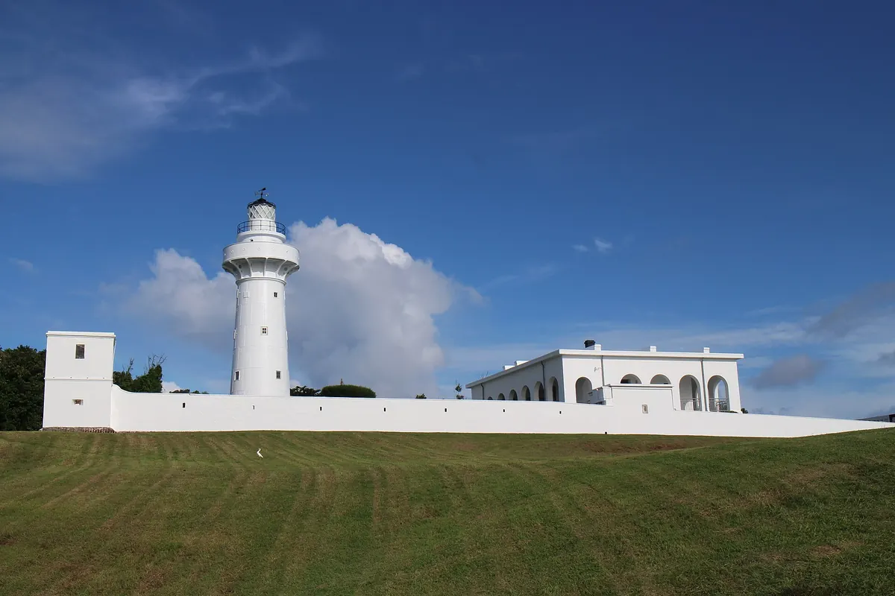

컨딩 클래식 일일투어, 대만 최남단에선 뭘 먹을까?
가오슝에서 출발해 어롼비 등대와 컨딩 해변을 도는 투어 전에, 볼거리와 근처 맛집을 챙겨보세요.
게시
컨딩(墾丁)은 대만 본섬 가장 남쪽 끝, 산호초가 솟아 생긴 해안과 바다가 어우러진 곳이에요. 가오슝에서 멀어서 하루에 둘러보려면 투어가 편해요.
01 · 컨딩과 어롼비 등대는 어떤 곳일까
컨딩은 바다에서 솟아오른 산호초 위에 숲이 자란 지형이 국가공원으로 보호되는 곳이에요. 어롼비 등대(鵝鑾鼻燈塔)는 1881년에 세운 흰 철탑 등대로, 대만 본섬에서 가장 남쪽에 있고, 포대처럼 쌓은 담과 해자를 갖춘 대만 유일의 무장 등대예요.

02 · 꼭 볼 것
어롼비 등대 1962년 성능을 높인 뒤 '동아시아의 빛(東亞之光)'으로 불렸고, 1992년부터 일반에 공개돼 등대 주변 공원을 산책하며 바다를 볼 수 있어요.
墾丁大街 밤이면 노점과 가게가 늘어서는 이 일대의 야시장 거리예요.
墾丁 해수욕장 '大灣'이라 불리는 해변이에요.
03 · 가는 법
투어로 가기 일정, 포함 사항, 출발 장소와 시간은 상품 옵션마다 달라요. 예약 전에 클룩 상품 페이지에서 꼭 확인하세요.
04 · 컨딩에서 들르기 좋은 근처 맛집
어롼비 등대 바로 근처에는 빙수집 한 곳이 있고, 나머지는 7~12km 떨어져 있어요. 아래 거리는 지도에 등록된 좌표로 잰 직선거리라 실제 이동 거리는 더 길 수 있어요.
悟空冰舖 · 빙수 · 북서쪽 약 0.3km 헝춘의 빙수 가게예요. 망고빙수가 맛있어요.
Alex Reggae Bar · BBQ · 북서쪽 약 7.6km 숯불로 굽는 바비큐 바예요. 쏨땀도 맛있어요.
亞發師海景餐廳 · 해산물 · 북서쪽 약 12.2km 컨딩 바닷가 어시장 2층의 해산물 식당이에요. 큰 접시 모둠회가 NT$200이고 영어 메뉴판이 있으며 카드 결제도 돼요.
가게마다 쉬는 날과 영업시간이 다르니 방문 전 구글맵에 등록된 영업시간을 확인하세요.
지도에서 컨딩 맛집도 확인해보세요
투어 일정에 맞춰 들를 컨딩 맛집을 지도에서 함께 찜해두세요.